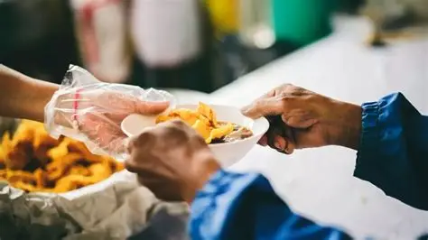

Projetos Sociais
A Busculo's acredita no poder do voluntariado e da união para gerar mudanças reais.
Nossos projetos são voltados à educação, alimentação e inclusão social, promovendo dignidade e novas
oportunidades para quem mais precisa.
Projeto 1 — Educação

O projeto de Educação oferece reforço escolar e oficinas culturais para crianças e adolescentes.
Nosso objetivo é combater a evasão escolar e incentivar o aprendizado contínuo. Você pode ajudar
sendo voluntário, doando materiais ou apoiando financeiramente as atividades.
Projeto 2 — Alimentação

O projeto de Alimentação realiza campanhas mensais para arrecadar e distribuir cestas básicas a
famílias em situação de vulnerabilidade. Nosso propósito é garantir o direito à alimentação digna
e reduzir a insegurança alimentar em nossa comunidade.
Como doar
Você pode contribuir com qualquer valor via transferência bancária ou PIX. Também realizamos
campanhas de arrecadação e recebemos doações de alimentos, roupas e materiais escolares.
Chave PIX: contato@busculos.org
Banco Solidariedade: Ag. 1234 — C/C 56789-0